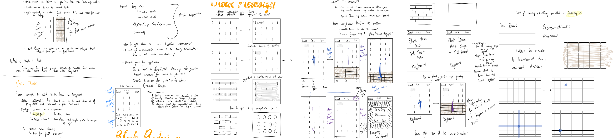
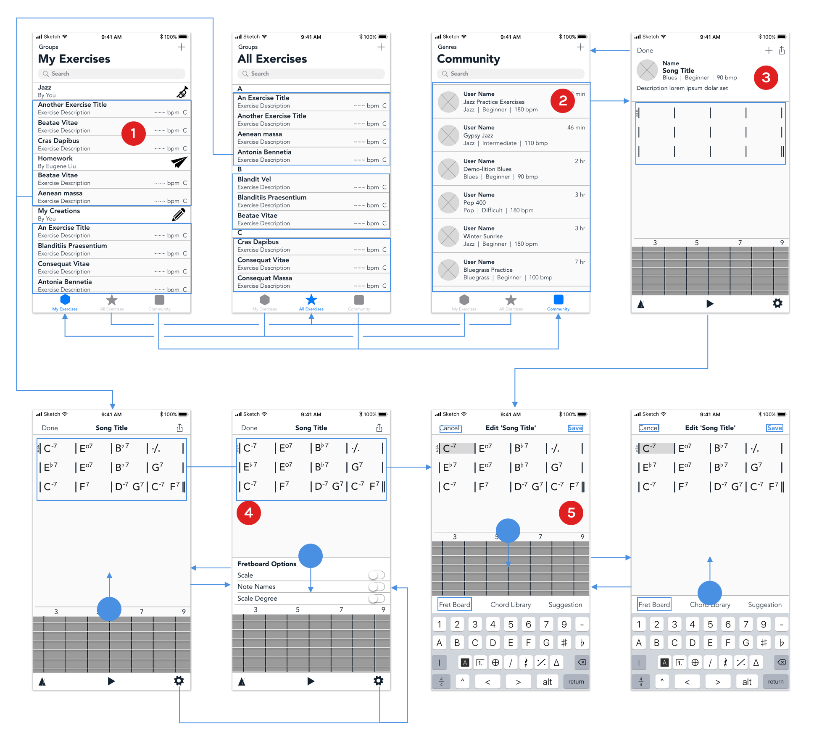

Role
As a remote product design intern, I refined an already-existing application prototype and idea into a more focused minimum viable product with a focus on beneficial user experience and interactions.
Non-Disclosure Agreement
Due to a NDA, I cannot dive into the specifics of the application; instead, I'll discuss my process and display some generic deliverables.
Idea Development
Upon receiving the position, I immediately began working with the entrepreneur to learn his vision, goals, and ambitions for the business and product. More specifically, since a prototype application was already developed, I wanted to learn what he liked, hated, and wanted to change about the product. Since the application focused on guitar education, a subject that I am admittedly not an expert at, this was a tremendous opportunity to learn about his perspective on the industry and the niche the application was trying to fill.
User Interviews
Next, I set up meetings with potential users to develop a more refined idea and product. I asked questions about the process that the app was trying to disrupt, what they like about it, what they wish could have been different, and what they want from this type of application. This provided valuable insight and led to many overhalls in ideation, user flow, and features of the application, while also proving that the concept has a place on the market.
Sketching
After defining the features, I began sketching and brainstorming how to design the application with a focus on the users. Every decision used the user research data and focused on what worked best for the end-user experience. I wanted to develop the application in a way that was both beneficial and new, yet felt familiar and friendly, so I sketched numerous ideas for every interaction, feature, and screen.

Wireframing
With sketches and brainstorming notes in hand, I developed some basic wireframes. Sifting through sketches and ideas was tedious, but I wanted to ensure that I chose the best methods interactions, screen layouts, etc. to add to the experience that matched both my and the entrepreneur's goals.

User Interaction
At this point, there was a bit of a time crunch. The entrepreneur needed a prototype video displaying the basic functionality and interactions of the screen at the same time that finals week stress seeped into my schedule. I sat down, developed the wireframes into user interfaces, and used Principle to create the following prototype to display the flow of the screens and user interactions.
Outcome
This internship has been a terrific experience. It has been a challenge - the application focuses on learning the guitar, which is an instrument that I do not own, nor know how to play. This required me to do my own research into the industry and learn more from user interviews. Developing the prototype, while also planning for expansion to other instruments in order to create a cohesive brand of education apps, was challenging and exciting.